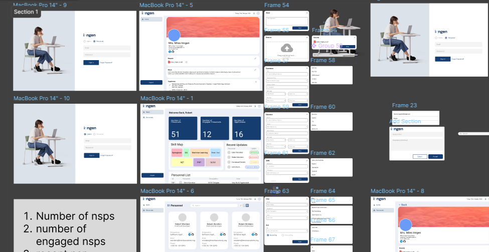

Web-Based MIS Dashboard
Client
Ingen Ghana Technologies
Role
Product Designer - UI/UX (Contract)
Duration
February 2024

The Problem
Ingen Ghana came with a specific request: they needed a management information system that their personnel could use to manage data and generate resumes in multiple formats.It had to handle structured personnel data and produce formatted document output. Two genuinely different problems sitting inside the same interface.
My Approach
I came with two distinct design directions - different enough that the client could genuinely choose based on their preferences and culture, not just pick the one that looked more finished.
The first direction was a dense, data-forward dashboard - sidebar navigation, tight information hierarchy, built for users who would live in the system daily and valued efficiency over aesthetics. The second was cleaner, with more whitespace, card-based layouts, and a softer visual language - better for an organisation that wanted the system to feel approachable to staff who weren't particularly tech-comfortable.
They picked the second. And then we refined it.
The resume generation feature required careful design thinking around format flexibility - the same data needed to produce outputs that looked correct whether the user wanted a PDF, a Word document, or another format.
What Made This Project Different
Most design contracts at this scope involve the designer going away, building something in isolation, and presenting it. The feedback loop is slow and the client often can't articulate what they don't like until they see it.
I deliberately structured this engagement to be collaborative from day one. The two-sample approach was about starting a conversation. By the time we got to refinement, the client felt ownership over the direction because they had made real choices, not just approved someone else's vision.
Outcome
Delivered a fully designed MIS dashboard that Ingen Ghana's personnel could use to manage their data and generate resumes across multiple formats.
The two-sample design approach eliminated major revision rounds. The client got to a final design faster than typical, and I left with a clearer understanding of their visual preferences - useful context for any future work together.